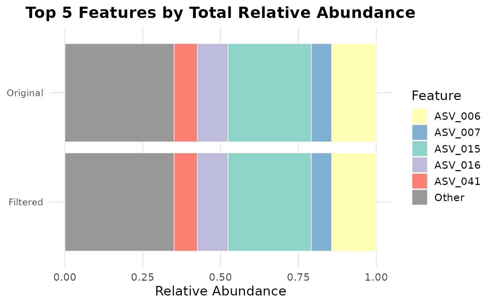

R/plot_top_features_stacked.R
plot_top_features_stacked.RdCreates a visualization showing the relative abundance composition of the top N features in both original and filtered feature tables. Each table's top N features are identified independently by summing abundances across all samples, converting to relative abundances, and selecting the top N. Non-top-N features are grouped as "Other".
plot_top_features_stacked(
original_table,
filtered_table,
top_n = 10,
plot_dir = NULL,
prefix = "top_features_stacked",
colors = NULL,
width = 10,
height = 7,
dpi = 300,
main_title = NULL
)Original feature table (data.frame) before filtering.
Filtered feature table (data.frame) after filtering.
Number of top features to show. Default is 10.
Optional directory path to save the plot. If NULL, plot is displayed only.
Prefix for saved plot filename. Default is "top_features_stacked".
Optional vector of colors for features. If NULL, auto-generated using ColorBrewer-style palette.
Plot width in inches for ggsave. Default 10.
Plot height in inches for ggsave. Default 7.
DPI for saved raster output. Default 300.
Main title for the plot. Default is auto-generated.
Returns a list containing:
Path to saved plot (if plot_dir provided)
Character vector of top N features in original table
Character vector of top N features in filtered table
Named vector of relative abundances for original top features + Other
Named vector of relative abundances for filtered top features + Other
The ggplot object
data(example_feature_table)
filtered <- filter_by_coverage(example_feature_table, min_reads = 1000)
plot_top_features_stacked(example_feature_table, filtered, top_n = 5)
#> $plot_path
#> NULL
#>
#> $orig_top_features
#> [1] "ASV_015" "ASV_006" "ASV_016" "ASV_041" "ASV_007"
#>
#> $filt_top_features
#> [1] "ASV_015" "ASV_006" "ASV_016" "ASV_041" "ASV_007"
#>
#> $orig_rels
#> ASV_015 ASV_006 ASV_016 ASV_041 ASV_007 Other
#> 0.26798082 0.14342487 0.09794964 0.07482170 0.06520458 0.35061840
#>
#> $filt_rels
#> ASV_015 ASV_006 ASV_016 ASV_041 ASV_007 Other
#> 0.26798082 0.14342487 0.09794964 0.07482170 0.06520458 0.35061840
#>
#> $plot

#>